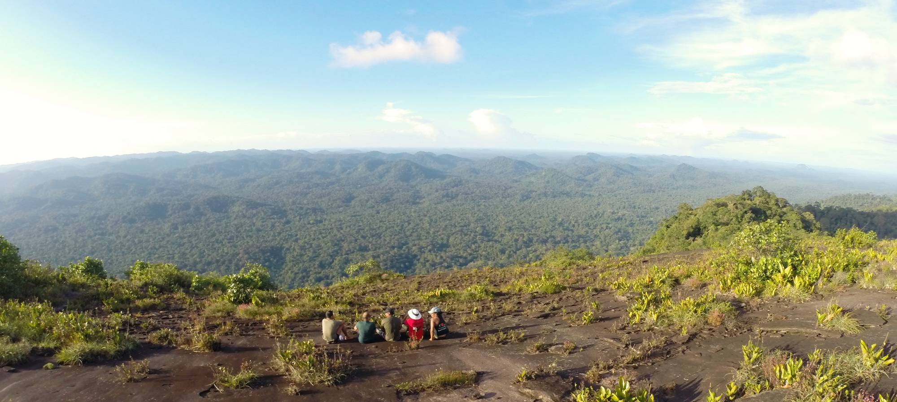

The Maroni River
The Marowijne or Maroni river is under territorial dispute and might not be entirely considered as part of Suriname. It makes up the border between Suriname and French Guiana, and this long river is home to the densest population of leatherback turtles. The river starts from the southern Trumuk Humak Mountains and leads down North where it connects to the Atlantic Ocean.
 A map view of the Maroni River
A map view of the Maroni River
With the French and Dutch having history disputing the territory because of its rich Bauxite and gold reserves this area would best be visited briefly because multiple governments are involved and invested in this river and its resources. At the very least it does not contain Piranhas.
 A shot from the Tumuk Humak Mountains